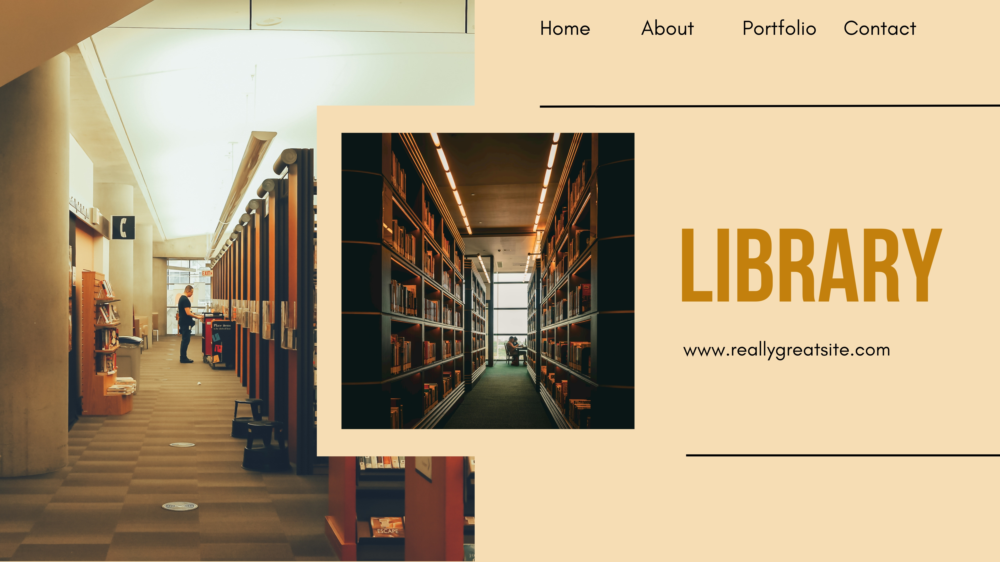
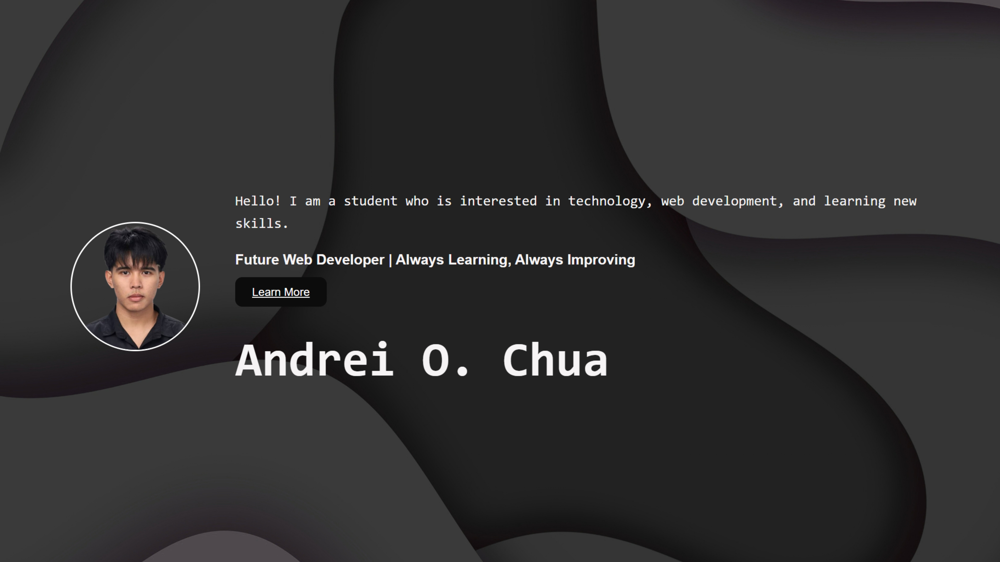
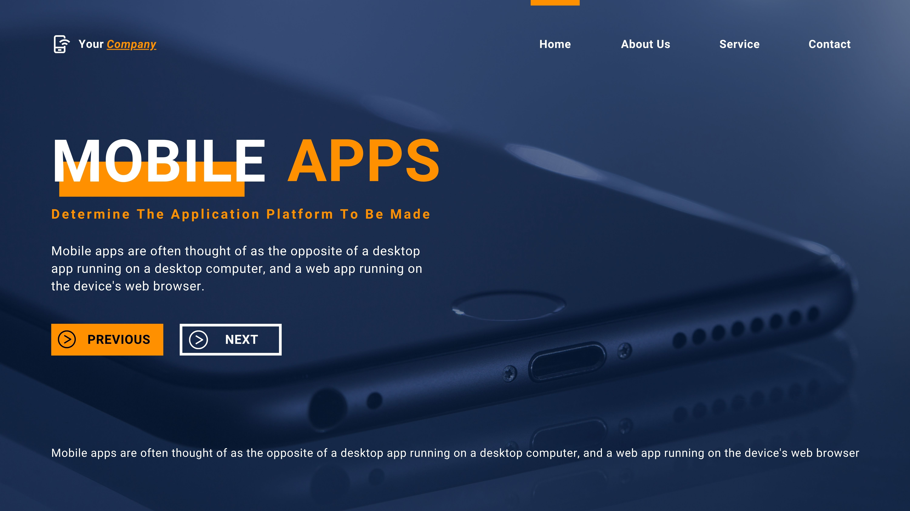

Hello! I am a student who is interested in technology, web development, and learning new skills.
Future Web Developer | Always Learning, Always Improving
Learn MoreHi, I'm Andrei, a 22-year-old student at CSU. I am a passionate learner with a keen interest in web development and technology. I enjoy exploring new tools and frameworks to enhance my skills and create innovative solutions.
I am currently pursuing my studies in the field of technology and web development. My academic journey has equipped me with a solid foundation in programming languages, web design, and software development.
Proficient in creating structured and semantic web pages using HTML5, ensuring accessibility and responsiveness.
Skilled in styling web pages with CSS3, including Flexbox and Grid layouts, animations, and responsive design techniques.
I'm Good at creating solutions and troubleshooting issues effectively.
Strong interpersonal and communication skills, enabling effective collaboration and client interaction.
Experienced in using Git for version control, including branching, merging, and collaborative development practices.
Proficient in various programming languages and technologies, with a strong foundation in problem-solving and algorithmic thinking.

A web-based system designed to manage books, organize library records, and improve library operations.
Technologies: HTML, CSS, JavaScript, Vue.js
View Project
A personal website showcasing my skills, background, and projects as a future web developer.
Technologies: HTML, CSS
View Project
A project created to practice programming, problem-solving, and web development skills. This is where I practice my coding skills.
Technologies: HTML, CSS
View Project| Year | Education / Experience | School / Organization | Description |
|---|---|---|---|
| 2023 - 2027 | College | Caraga State University | Currently pursuing a degree in Computer Science and gaining knowledge in various programming languages and technologies. |
| 2018-2023 | Junior & Senior High School | Ampayon National High School | Completed senior high school education and gained knowledge in different academic subjects. |
| 2011 - 2017 | Elementary School | Ampayon Central Elementary School | Completed elementary education and developed basic academic and communication skills. |